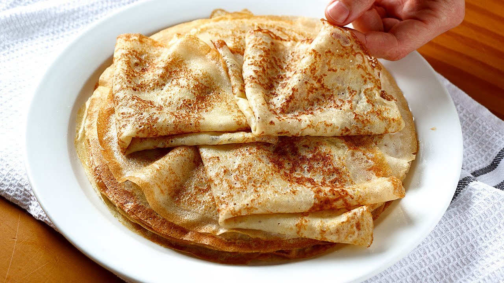

Pasos a seguir:
- Mezcla las yemas de huevo, el azúcar y la maicena con un poco de leche.
- Calienta el resto de la leche con la corteza de limón. Déjalo cocer por unos 8 minutos apróximadamente sin dejar de remover. Espera hasta que esté tibia para rellenar las crêpes.
